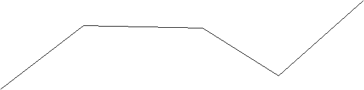
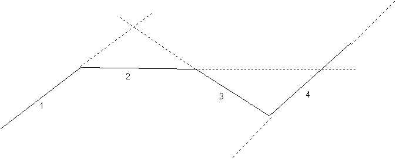

Source ponctuelle (réelle ou virtuelle)
ou
Définition
Elle
est définie par les points S, 1 et 2, et par le nombre de
rayons lumineux composant le faisceau.L'ordre des points 1 et 2 n'est
pas indifférent: les rayons sont émis entre S-1 et S-2
dans le sens trigo direct.
La source peut être
ajoutée:
- en cliquant sur le bouton de la barre d'outil
ayant la forme ci-dessus, puis en faisant un clic simple pour saisir
le point source S, puis en faisant un clic simple pour saisir le
point 1, puis en faisant un clic simple pour saisir le point 2 (ne
pas maintenir le bouton de la souris enfoncé entre les deux
points); et enfin en donnant dans la boite de saisie qui s'ouvre
alors, le nombre de rayons composant le faisceau.
OU
- menu
"Ajouter" puis "Source" puis "Objet ponctuel
réel ou virtuel".
Options
On
peut imposer
-l'épaisseur du trait représentant les
rayons à l'écran
- la couleur des rayons; ce
n'est pas simplement la couleur représentée à
l'écran, mais aussi la couleur qui détermine l'indice
de réfraction pour les milieux réfractants dispersifs;
un rayon de lumière blanche est composé de trois rayons
rouge, vert et bleu.
- le nombre maximal de
rayons enfants; lorsque le rayon arrive sur un dioptre, il donne en
général naissance à un rayon réfléchi
et à un rayon transmis; le rayon réfléchi est
appelé ici "rayon enfant" (sauf dans le cas de la
lame semi-réfléchissante idéale);
par défaut, le nombre maximal d'enfants est de 10. Remarque:
un enfant peut avoir lui aussi des enfants, mais son nombre maximal
d'enfant est celui de son rayon parent diminué de 1.
Le nomre de rayons enfant s'applique à chacun des rayons
composant le faisceau.
- le fait qu'il existe ou pas un rayon
réfléchi en plus du rayon réfracté est
une propriété de chaque élément
réfractant
- si il n'y a pas de réfraction
(angle d'indicence plus grand que l'angle limite), le rayon réfléchi
est un rayon simple, pas un enfant
- on peut
demander à ce que les prolongements des différents
segments qui composent le trajet d'un rayon soient tracés en
pointillés, vers l'avant ou vers l'arrière, et
ce pour chacun de rayons qui composent le faisceau; il suffit de
préciser la liste des segments concernés (segments
numérotés dans l'ordre de propagation du rayon); ainsi,
si le cheminement du rayon est le suivant:

et qu'on demande le prolongement (1,2,4) vers l'avant et (3,4)
vers l'arrière,
alors on obtient:

- Tracé des surfaces d'onde: dans le cas d'une
source réelle, on peut demander le tracé de surfaces
d'onde; il suffit d'indiquer la valeur du chemin optique pour lequel
on veut effectuer le tracé. Cela ne reléve pas vraiment
de l'optique géométrique, mais on ne paye pas plus
cher...
A noter que pour que le tracé soit pris en compte,
la simulation ne doit comporter ni miroir sphérique paraxial,
ni lentille mince paraxiale; ces éléments sont en effet
des idéalisations, schématisées par des surfaces
planes alors qu'ils sont en réalité sphériques,
et on ne peut pas calculer les chemins optiques correctement dans ce
cas. Mais rien n'empêche d'utiliser miroir sphérique
réel et lentille réelle...
Ces
propriétés peuvent être rendues accessibles:
-
à la construction du rayon si on passe par le menu "Ajouter"
-
à tout instant en cliquant sur le bouton "Propriétés"
de la barre d'outil, puis en cliquant sur un des cercles bleus qui
apparaissent sur l'élément dont on veut obtenir les
propriétés; ne pas oublier à la fin de cliquer
sur le bouton "Fin prop." de la barre d'outil pour quitter
le mode propriétés.